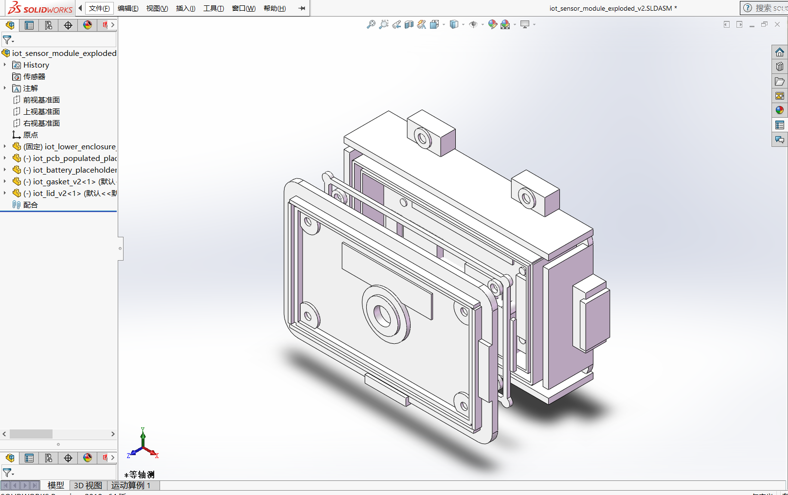
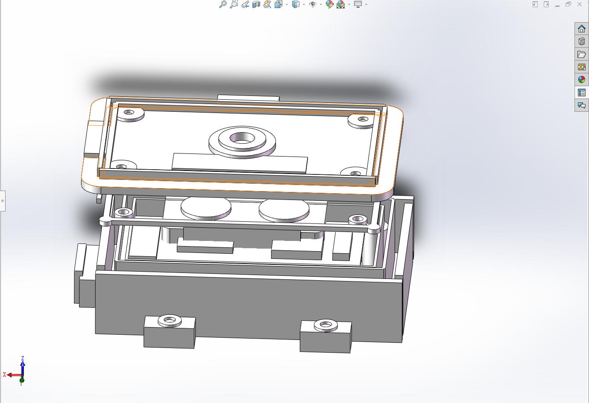
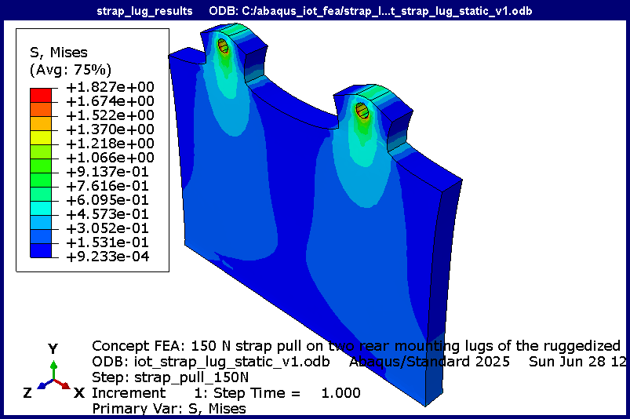
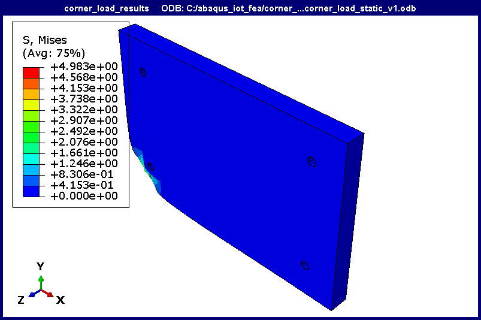
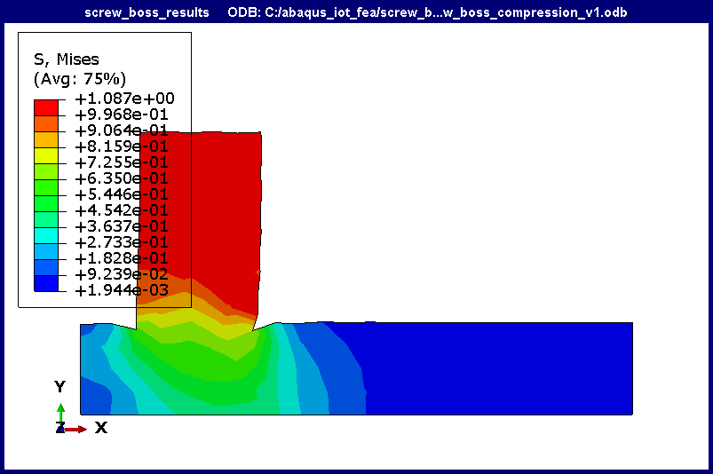
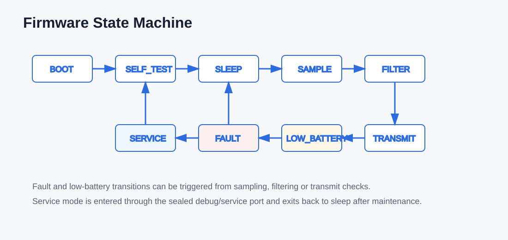
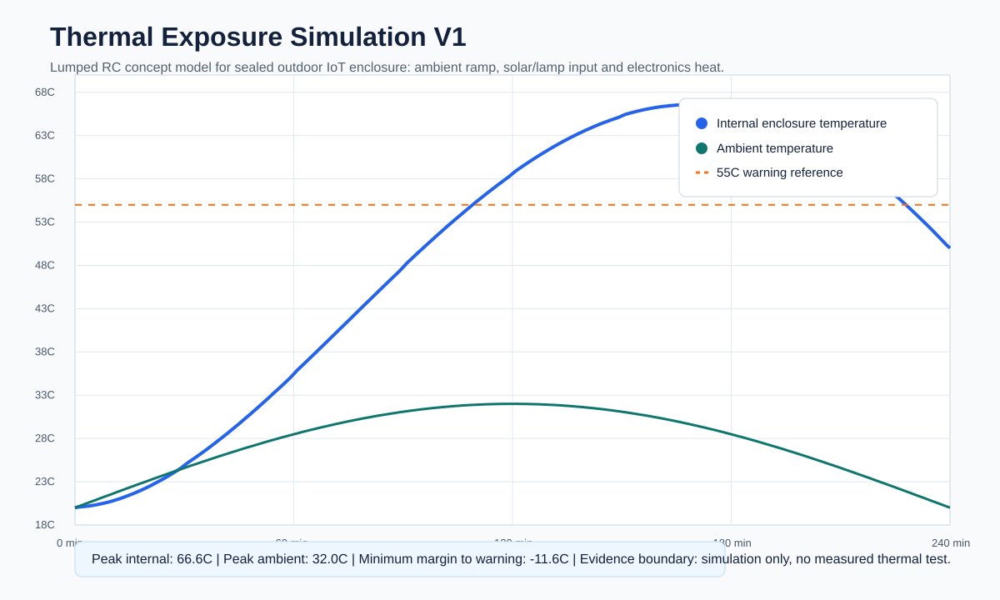

Self-directed design study · CAD, FEA and firmware
Ruggedised Outdoor IoT Sensor Enclosure
An enclosure concept for a battery-powered field sensor, designed in SolidWorks and checked in Abaqus: in all three load cases, peak stress stays at least seven times below the assumed material yield.
My role: self-directed design study, with no physical prototype yet. I wrote the requirements, modelled the enclosure in SolidWorks, ran three Abaqus screening load cases, structured the embedded C firmware in Keil and built a thermal model of the sealed box.

Enclosure design (SolidWorks)
Two versions of the model set (V1 and V2): lower enclosure, lid, gasket, PCB and battery envelopes and an exploded assembly, exported to STEP and STL. Parts and assemblies are generated by SolidWorks API scripts, so the model can be rebuilt after each design change.
- Sealing: gasket groove in the base, compression ribs on the lid and a clamp ring for the sensor membrane.
- Fastening: screw-boss rings, counterbored screw pads on the lid and internal ribs.
- Mounting and service: rear strap-mount lugs, a side service/debug port boss and a front cable-gland ring.
- Packaging: PCB standoff rings, battery restraint clips and PCB/battery envelopes for package checks.
- Definition: requirements matrix (12 initial requirements), DFMEA and DFM checklist.


FEA screening (Abaqus)
Three static load cases in Abaqus 2025, each built by a Python script, using an assumed PC-ABS material (40 MPa yield reference) with simplified geometry and supports. The corner load governs.
On small screens, swipe the table to see all columns.
| Load case | Load | Peak von Mises | Peak displacement | Yield ratio |
|---|---|---|---|---|
| Strap-mount pull (two rear lugs) | 150 N | 1.57 MPa | 0.010 mm | 25.47 |
| Corner load (drop/handling) | 120 N equivalent static | 5.55 MPa | 0.021 mm | 7.21 |
| Screw-boss clamp | 90 N | 1.20 MPa | 0.005 mm | 33.36 |



Electronics and firmware structure (Keil C)
Embedded C in Keil µVision, organised as a state machine (boot, self-test, sleep, sample, filter, transmit, low-battery, fault and service), plus sensor-driver and power-monitor modules, startup code and a linker scatter file.
- Clean ARM Compiler 6 build for an ARMCM3 prototype target: 0 errors, 0 warnings, 500 bytes of code.
- STM32L432KCUx selected as the low-power candidate MCU, with a pin allocation and porting plan.
- Connection-level netlist and power budget link each signal to its firmware owner and to the enclosure: PCB envelope, battery restraint, sealed service port and sensor membrane.

Thermal check
A lumped thermal model (Python) of the sealed enclosure combines a warm ambient ramp, solar heat input and electronics duty-cycle pulses over 240 minutes. Peak internal temperature reached 66.6 °C, above the 55 °C warning level, so direct sun exposure needs mitigation:
- Lighter enclosure colour and shaded mounting.
- Lower radio and LED duty cycle.
- Review of the vent membrane.

Next steps
Build a physical prototype and run strap-pull, spray, drop and temperature-logging tests against the FEA and thermal predictions, then lay out the PCB.
Get in touch
I am completing my Master of Engineering Studies (Mechanical) at the University of Auckland in July 2027 and am looking for graduate mechanical engineering roles in New Zealand.